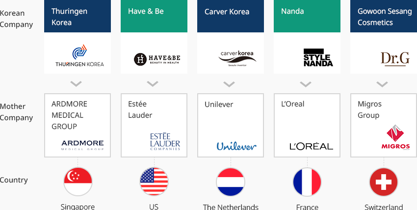
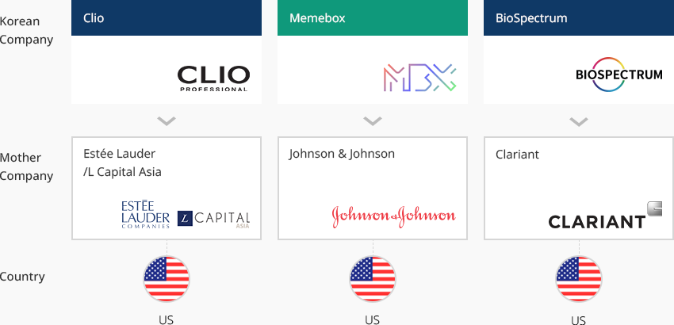
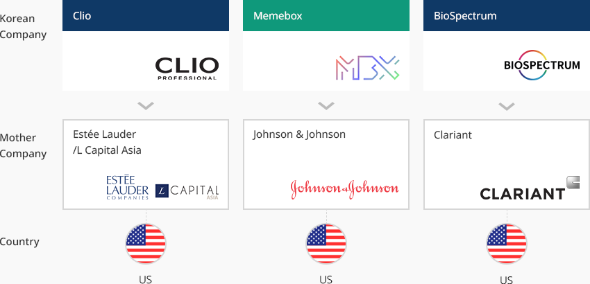
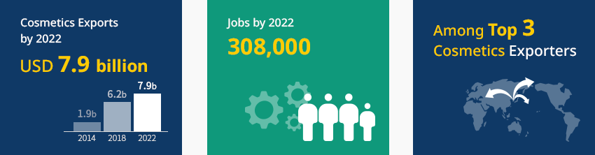
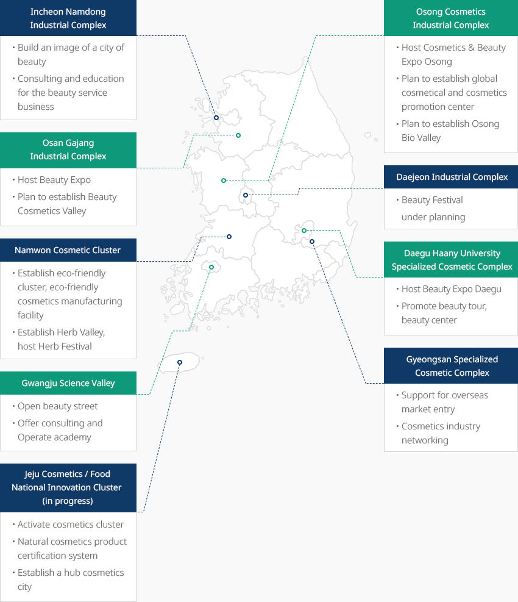

Beauty
- Home
- Why KOREA
- Industry
- Beauty
-
Korea, the Little Giant In the Global Cosmetic Market CloseKorea, the Little Giant In the Global Cosmetic MarketKorea’s cosmetics market is worth approximately USD 12.6 billion as of 2020, the 9th largest market
in the world after India. By possessing its own cosmetics manufacturing technology,
Korea has secured competitiveness in the global cosmetics market. Korea also serves as a test-bed for
the product development of global brands.As K-Beauty 9th to be recognized as a major player in the global beauty market, the global demand for
Korean cosmetics is rapidly increasing. Despite the COVID-19 pandemic, Korea’s Cosmetics have steadily
increased and exceeded USD 7 billion for the first time in 2020. It has recorded an average annual growth
rate of 15.7% (2016-2020), maintaining its status as the world’s fourth largest exporter of cosmetics."Cosmetics Exports by Country"(Unit: USD million)Cosmetics Exports by Country Rank, Country, Years(2016,2017,2018,2019, 2020), CAGR (‘16-‘20) Rank Country 2016 2017 2018 2019 2020 CAGR
(‘15-‘19)1 France 13,326 15,245 16,983 17,552 15,319 3.6% 2 US 9,540 10,162 10,737 11,006 9,741 -0.2% 3 Germany 8,301 8,691 9,684 9,472 8,221 -0.3% - 4
- Korea
- 4,224
- 4,997
- 6,308
- 6,571
- 7,602
- 15.8%
5 Japan 2,719 3,703 5,252 5,868 6,790 15.8% 6 Italy 4,714 5,175 5,790 5,682 4,894 0.9% 7 China 3,195 3,778 4,411 4,760 4,751 10.4% 8 Hong Kong 1,837 2,325 3,151 3,730 4,675 26.3% ※ Source: ITC (2020), Foundation of Korea Cosmetic Industry Institute (2020)
※ Note: Classified according to Korean cosmetics standards / Singapore is excluded from the list of cosmetics manufacturing/exporting countries as its performance is centered on intermediary trade. -
Maintaining Growth through Export Expansion Amid COVID-19 OpenMaintaining Growth through
Export Expansion Amid COVID-19The Korean cosmetics industry has continued to expand exports in order to respond to the slowing of
domestic market growth and the market downturn caused by the COVID-19 pandemic.
It has recorded an average annual growth rate of 3.8% over the past five years (2016-2020).The export of cosmetics, in particular, has recorded high growth, thanks to the popularity of
Hallyu (Korean Wave) led by K-Beauty. Its average annual growth rate over the past
five years (2016-2020) has reached as high as 15.8%.Cosmetics Production Category, Years(2010 ~ 2019) ※ Source: Ministry of Food and Drug Safety
※ The number of companies include only those manufacturers that have reported production performance. -
Continued Investment in Korea Brands By Global Companies OpenContinued Investment in Korea Brands By Global CompaniesForeign investors’ continue to take interest in Korean's cosmetics market.Unilever, a global cosmetics company, acquired Carver Korea in 2016. L’Oreal acquired Stylenanda in 2018.
Before and after these deals, other global companies, including Migros Corporation,
Johnson & Johnson, and Clariant, continued to invest in the Korean market. Gowoon Sesang Cosmetics, in particular,
has posted growing sales amid the COVID-19 situation, demonstrating the potential of K-Beauty."Global Company – Korean Company Acquisition"Global Company – Korean Company Acquisition Country, Mother Company, Korean Company Country Mother Company Korean Company Singapore ARDMORE MEDICAL GROUP Thuringen Korea US Estée Lauder Have & Be The Netherlands Unilever Carver Korea France L’Oreal Nanda Switzerland Migros Group Gowoon Sesang Cosmetics  "Global Company – Korean Company Investment"
"Global Company – Korean Company Investment"Global Company – Korean Company Investment Country, Mother Company, Korean Company Country Mother Company Korean Company US Estée Lauder/L Capital Asia Clio US Johnson & Johnson Memebox US Clariant BioSpectrum
-
Transform into The Main Export Industry of the Future OpenTransform into The Main Export Industry of the FutureThe Korean government has been making efforts to intensively foster the cosmetics industry as
a major export industry of the future. The government aims to make Korea one of the top three cosmetics
exporters and create up to 308,000 jobs by 2022. It also plans to diversify export markets,
which are currently concentrated in the Greater China region.
In March 2020, Korea introduced the world’s first customized cosmetics sales system,
which helps to foster customized cosmetics managers according to strict standards and offer
a variety of products to meet the needs of various customers.Korea conducts consumer surveys and studies to understand the skin characteristics of Korean and
New Southern (Southeast Asia and India) consumers, on topics such as skin measurement, skin genome analysis,
and skin microbiological analysis. Based on the results, Korea develops customized products and
prepares market entry strategies. -
Active Support from the Central and Local Governments To Foster the Industry OpenActive Support from the Central and Local Governments To Foster the IndustryThe Korean cosmetics industry is actively engaged in industrial activities, mainly in the metropolitan area
where the market and distribution infrastructure are concentrated. Currently, 57.9% of the total number of
businesses and 57.1% of the total number of employees are located in this area.In addition, regional clusters have been established in Gyeongsangbuk-do (Gyeongsan) and
Chungcheongbuk-do (Osong), thereby contributing to the development of the Korean cosmetics industry.
The establishment of K-Beauty Clusters has been continuously promoted through public-private
consultative bodies in complexes, such as Osan Gajang Industrial Complex, Hwaseong Hyangnam
Industrial Complex, Incheon Namdong Industrial Complex, and Chungbuk Osong/Ochang Industrial Complex.The Korean government plans to establish a K-Beauty Cluster, where one-stop service can be provided
from cosmetics production, R&D on new technologies, beauty service and professional training, to promotion
and consulting for SMEs. The cluster will serve as a base for fostering the K-Beauty industry."Regional Beauty Industrial Clusters in Korea"-
Incheon Namdong Industrial Complex
- Build an image of the city of beauty
- Consulting and education for the beauty service business
-
Osong Cosmetic Industrial Complex
- Host Cosmetics & Beauty Expo Osong
- Plan to establish global cosmetical and cosmetics promotion center
- Plan to establish Osong Bio Valley
-
Osan Gajang Industrial Complex
- Host Beauty Expo
- Plan to establish Beauty Cosmetics Valley
-
Daejeon Industrial Complex
- Beauty Festival under planning
-
Namwon Cosmetic Cluster
- Establish eco-friendly cluster, eco-friendly cosmetics manufacturing facility
- Establish Herb Valley, host Herb Festival
-
Daegu Hanny University Specialized Cosmetic Complex
- Host Beauty Expo Daegu
- Promote beauty tour, beauty center
-
Gwangju Science Valley
- Open beauty street
- Offer consulting and operate academy
-
Gyeongsan Specialized Cosmetic Complex
- Support for overseas market entry
- Cosmetics industry networking
-
Jeju Cosmetics / Food National Innovation Cluster (in progress)
- Activate cosmetics cluster
- Natural cosmetics product certification system
- Establish a hub cosmetics city
※ Source: Future strategies for the cosmetics industry (Ministry of Health and Welfare, May 2019) -
Incheon Namdong Industrial Complex


Invest KOREA
Recommendation on Locations
Industrial complex information
[Gyeonggi-do Osan City] Gajang 2nd General Industrial Complex
Click [Go to Detailed Information] to go to the relevant information screen of
Smart K-Factory service of Industrial Complex Corporation.
-
Complex nameGajang 2nd General Industrial Complex
-
Initial designation date2008.05.14
-
Designated area(m2)595,431
-
ManagementGyeonggi-do Osan City
-
Nearby RailwayOsan Station
-
Distance from station(km)4
-
Nearby AirportGimpo International Airport
-
Distance from airport(km)61
-
Industrial water Supply capacity(ton/day)3595(㎥/day)
-
Affiliation local governmentGyeonggi-do Osan City
-
Population228,768
Industrial complex information
[Gwangju Metropolitan City Buk-gu] Gwangju High-tech Science and Industrial
Complex
Click [Go to Detailed Information] to go to the relevant information screen of
Smart K-Factory service of Industrial Complex Corporation.
-
Complex nameGwangju High-tech Science and Industrial Complex
-
Initial designation date1990.07.21
-
Designated area(m2)9,991,652
-
ManagementKorea Industrial Complex Corporation
-
Nearby RailwayGwangju Station
-
Distance from station(km)14
-
Nearby AirportGwangju Airport
-
Distance from airport(km)15
-
Industrial water Supply capacity(ton/day)17177(㎥/day)
-
Affiliation local governmentGwangju Metropolitan City Buk-gu
-
Population1,454,154
Industrial complex information
[Incheon Metropolitan City Namdong-gu] Namdong National Industrial Complex
(Renewable Business District)
Click [Go to Detailed Information] to go to the relevant information screen of
Smart K-Factory service of Industrial Complex Corporation.
-
Complex nameNamdong National Industrial Complex (Renewable Business District)
-
Initial designation date1980.09.02
-
Designated area(m2)9,504,046
-
ManagementKorea Industrial Complex Corporation
-
Nearby RailwayBupyeong Station
-
Distance from station(km)9
-
Nearby AirportIncheon Airport
-
Distance from airport(km)32
-
Industrial water Supply capacity(ton/day)49081(㎥/day)
-
Affiliation local governmentIncheon Metropolitan City Namdong-gu
-
Population2,943,491
Industrial complex information
[Chungcheongbuk-do Cheongju City] Osong 2nd Life Science Complex (Chungbuk
Free Economic Zone)
Click [Go to Detailed Information] to go to the relevant information screen of
Smart K-Factory service of Industrial Complex Corporation.
-
Complex nameOsong 2nd Life Science Complex (Chungbuk Free Economic Zone)
-
Initial designation date2010.10.15
-
Designated area(m2)3,283,845
-
ManagementKorea Industrial Complex Corporation
-
Nearby RailwayOsong Station
-
Distance from station(km)3
-
Nearby AirportCheongju International Airport
-
Distance from airport(km)24
-
Industrial water Supply capacity(ton/day)7,685(㎥/day)
-
Affiliation local governmentChungcheongbuk-do Cheongju City
-
Population843,782
Industrial complex information
[Jeju Special Self-Governing Province Jeju-si] Lava and Seawater General
Industrial Complex
Click [Go to Detailed Information] to go to the relevant information screen of
Smart K-Factory service of Industrial Complex Corporation.
-
Complex nameLava and Seawater General Industrial Complex
-
Initial designation date2009.12.09
-
Designated area(m2)197,341
-
ManagementJeju Special Self-Governing Province Jeju-si
-
Nearby Railway-
-
Distance from station(km)-
-
Nearby AirportJeju International Airport
-
Distance from airport(km)33
-
Industrial water Supply capacity(ton/day)1970(㎥/day)
-
Affiliation local governmentJeju Special Self-Governing Province Jeju-si
-
Population491,184
Industrial complex information
[Gangwon-do Gangneung City] Gangneung Science General Industrial
Complex
Click [Go to Detailed Information] to go to the relevant information screen of
Smart K-Factory service of Industrial Complex Corporation.
-
Complex nameGangneung Science General Industrial Complex
-
Initial designation date1993.12.15
-
Designated area(m2)1,486,850
-
ManagementGangwon-do Gangneung City
-
Nearby RailwayGangneung Station
-
Distance from station(km)9
-
Nearby AirportYangyang International Airport
-
Distance from airport(km)40
-
Industrial water Supply capacity(ton/day)4,939(㎥/day)
-
Affiliation local governmentGangwon-do Gangneung City
-
Population212,935